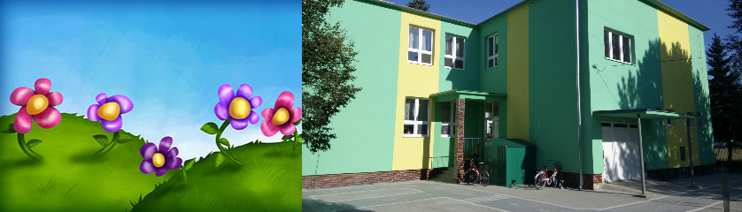
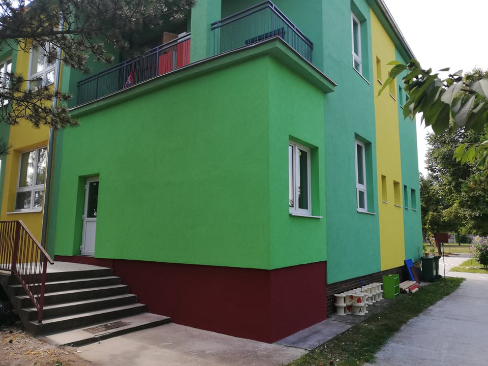

Nechajte deti užívať si svoje detstvo.

Materská škola v Novej Stráži, na Dlhej ul. č.1. Budova bola postavená pre tento účel. Je jednotriedna, s celodennou starostlivosťou, s možnosťou poskytovania poldennej starostlivosti pre tri až šesť ročné deti s odloženou školskou dochádzkou.
Budova je poschodová. Na prízemí je trieda materskej školy s vyučovacím jazykom slovenským, jedáleň, sociálne zariadenia, prezliekáreň, kancelária riaditeľa a kancelária vedúcej školskej jedálne.
Na poschodí sa nachádza trieda materskej školy s vyučovacím jazykom maďarským, kancelária riaditeľa a sociálne miestnosti pre deti.
Dvor je priestranný, dostatočne vybavený, sú zriadené 2 pieskoviská, ihrisko „Dopraváčik“, agátové ihriská, multifunkčné ihrisko. Celý areál je zatrávnený, vysadený ihličnatými a listnatými stromami. Celý areál materskej školy je oplotený zo všetkých strán. Správkyňou budovy je riaditeľka materskej školy s vyučovacím jazykom maďarským.
Cez letné prázdniny r.2021 sa realizovala na našej Materskej škole zástavba terasy, čím sa získal väčší vnútorný priestor. Ďakujeme pekne nášmu zriaďovateľovi Mestu Komárno za zrealizovanie stavby, vďaka ktorej môžeme tieto priestory užitočne využívať.

Ďakujeme nášmu zriaďovateľovi - Mestu Komárno, za zateplenie budovy a obnovenie fasády materskej školy. V šk. r. 2018/2019 môžu deti navštevovať už pekne esteticky upravenú materskú školu. Vďaka patrí aj členom Rady školy, ktorí ochotne pomáhajú a spolupracujú s MŠ. Ďakujeme pracovníkom mesta Komárna, za opravu a náter preliezok a plotu. Rodičom ďakujeme za spoluprácu pri brigáde na školskom dvore. Výsledkom spolupráce nás všetkých - učiteliek, zamestnancov MŠ, zriaďovateľa, rodičov, Rady školy - je nádherná materská škola, do ktorej deti veľmi radi chodia.
Az óvoda Őrsújfalun a Hosszú utca 1 szám alatt található. Az épület erre a célra lett felépítve. Egy osztályos óvoda, egésznapi gyermekfelügyelettel, félnapos felügyelet lehetőségével 3-6 éves gyermekek részére halasztott iskolalátogatással.
Az épület emeletes. Az alsó szinten helyezkedik el a szlovák tanítási nyelvű osztály, az ebédlő, szociális helységek, öltöző, az igazgatónő és az iskolaétterem vezetőjének irodája. Az emeleten található a magyar óvoda tágas, világos csoportszobája, az igazgatónő irodája és a gyermekek szociális helységei. A csoportszoba megfelelő a jelenlegi létszámnak, világos és napfényes.
Az udvar tágas 3636 m2, jól felszerelt, két homokozó található, közlekedési pálya, 2 többfunkciós akácrönk mászóka, 1 akácrönk hajó csúszdával és egy fa csúszda hintákkal. Az egész terület füvesítve van, kiültetett lomblevelű és tűlevelű fákkal. Az udvar fűnyírása a lehetőségek szerint meg van oldva. A fűnyírást a COMORRA SERVIS biztosítja. Az óvoda egész területe körül van kerítve. Az épület gondnoksága a magyar tanítási nyelvű óvoda igazgatónő tisztje.
Materská škola
Dlhá ul. 1
Komárno - Nová Stráž
945 04
Tel.: 035/7782103
E-mail: msnovastraz@komarno.sk